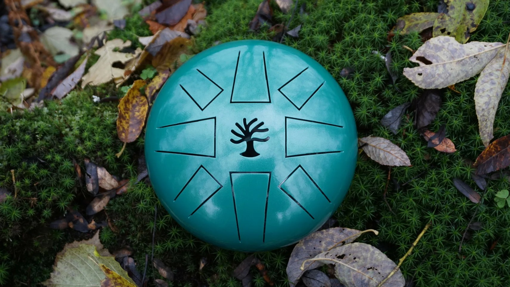
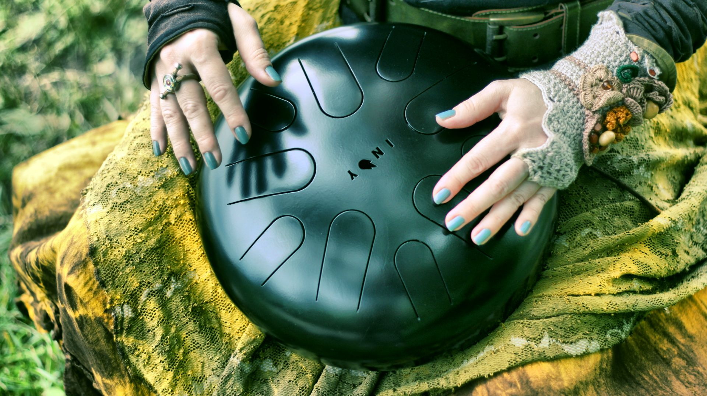
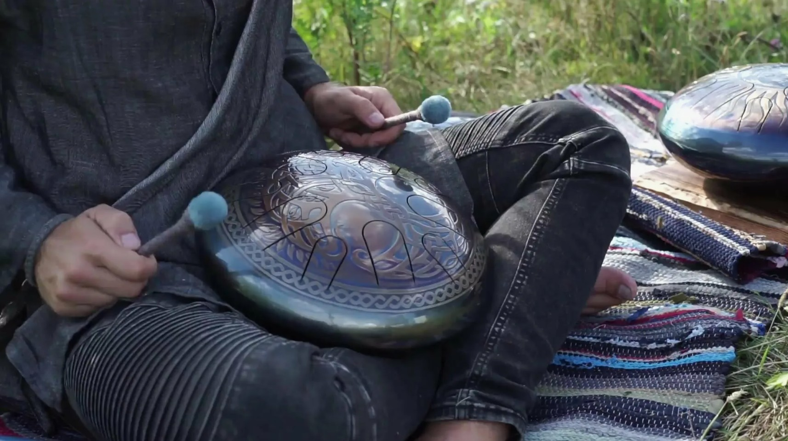

Глюкофон: гармония стали и звукотерапия
Феномен глюкофона: от инструмента к терапевтическому средству
Глюкофон (steel tongue drum) — это современный музыкальный инструмент из стали, создающий глубокие резонирующие звуки, напоминающие колокольные перезвоны. Возникший как evoluzione идеи ханга (Handpan) в 2000-х годах, он быстро нашел применение в звукотерапии благодаря способности индуцировать состояния глубокой релаксации. В отличие от традиционных инструментов, глюкофон не требует музыкальной подготовки: любая случайная последовательность ударов звучит гармонично, что позволяет пациенту сосредоточиться на ощущениях, а не на технике игры.
Ключевой особенностью инструмента является его способность создавать плотное виброакустическое поле с богатым спектром обертонов. Звук глюкофона воздействует не только через слух, но и через тактильную вибрацию, передаваясь через костную проводимость. Это делает его эффективным инструментом для работы с телесными зажимами и эмоциональными блоками, позволяя организму войти в состояние естественного резонанса без когнитивного контроля.

Описание прекрасной картинки
Научные основы: физика резонанса и клеточный отклик
С физической точки зрения звук глюкофона представляет собой сложную волну с длительным сустейном и выраженными гармониками. Принцип симпатического резонанса, описанный Христианом Гюйгенсом, лежит в основе терапевтического эффекта: внешняя вибрация инструмента синхронизируется с собственными частотами тканей организма. Когда частота звука совпадает с резонансной частотой органа или клетки, происходит усиление колебаний, способствующее восстановлению энергетического баланса и «мелодии здоровья».
На клеточном уровне воздействие происходит через интегральные белки-рецепторы, действующие как молекулярные «наноантенны». Если колебания энергии во внешней среде оказываются в резонансе с антенной белка-рецептора, в нем происходит перераспределение заряда и связывание с сигналом, как ключ в замке. Передаточным звеном между такими сигналами и белками цитоплазмы служит клеточная мембрана, что позволяет звуку влиять на клеточное поведение и запускать процессы самовосстановления.

Описание прекрасной картинки
Клиническое применение: от стресса к восстановлению
В клинической практике глюкофон используется для снижения уровня кортизола, нормализации артериального давления и улучшения качества сна. Низкочастотные звуки (60–150 Гц) воздействуют на жидкие среды организма, оказывая эффект внутреннего массажа, что ценно для снятия мышечных спазмов и болевого синдрома. Высокие частоты (выше 200 Гц) стимулируют верхние энергетические центры, способствуя ясности сознания и эмоциональной стабилизации.
Сеанс звукотерапии с использованием глюкофона обычно длится от 30 до 60 минут и включает постепенное погружение клиента в виброакустическое поле. Специалист отслеживает состояние организма с помощью вегетативных реакций, таких как кожная сосудистая реакция и динамика частоты пульса. Оздоровительные эффекты включают увеличение диапазона подвижности опорно-двигательного аппарата, а также оказание сенсорной стимуляции для людей с отклонениями в развитии.

Описание прекрасной картинки
Психосоматическое измерение: остановка внутреннего диалога
С появлением научного понимания механизмов клеточного резонанса звук приобрёл измерение психосоматического инструмента. Звучание глюкофона, богатое обертонами, воздействует на устойчивые во времени нейронные связи в структурах мозга, отвечающие за привычки и стереотипы. Непривычность и плавность звуковых сочетаний не позволяет родиться ассоциативным цепочкам в слуховой памяти, что даёт возможность «выключить» привычные программы психики и остановить внутренний диалог.
В прикладном контексте принципы звукотерапии находят применение в создании сред, поддерживающих процесс исцеления. Терапевтические сессии характеризуются использованием телесно-ориентированных приемов, таких как дыхательные упражнения и массаж вибрирующим инструментом. Заключительный этап терапии — её превращение в инструмент саморегуляции, когда человек учится использовать звук для возвращения к реальности и восстановления контакта с повседневной жизнью.
Описание прекрасной картинки
Звуковая терапия с использованием глюкофона — это многоуровневый процесс, начинающийся с физического резонанса на клеточном уровне и завершающийся формированием психосоматической гармонии. На каждом этапе сохраняется ключевой принцип: звук воздействует там, где биологическая система способна не просто поглощать вибрацию, но трансформировать её в устойчивый колебательный процесс с положительной обратной связью. Глюкофон остаётся уникальным явлением, в котором физика вибрации, биология восприятия и психология исцеления сходятся в едином акте терапевтического резонанса, подтверждая, что основа исцеления лежит в способности живого организма отвечать на гармонию.
Спасибо за подписку!
2026 Purity of Aum
Настасья Звонарёва